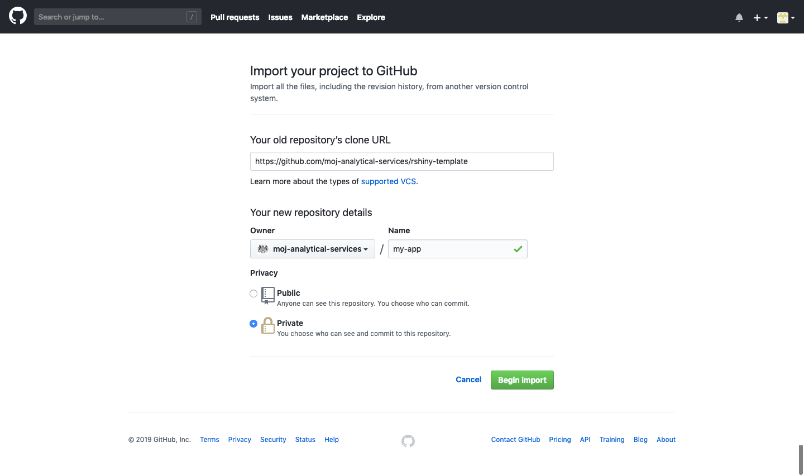
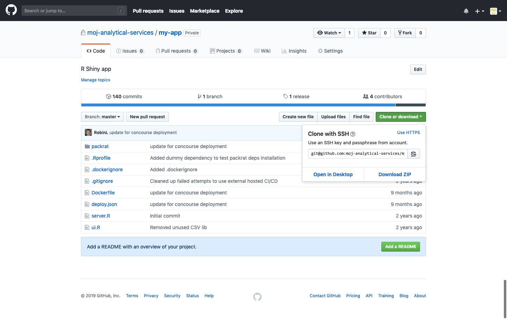

Part 5 Deploying an R Shiny app
5.1 Basic deployment
5.1.1 Summary
To create and deploy a Shiny app, you should follow these steps:
5.1.2 Copy the app template
- Go to github.com/new/import
- Fill in the form:
- Your old repository’s clone URL:
https://github.com/moj-analytical-services/rshiny-template - Owner:
moj-analytical-services - Name: The name of your app, e.g.,
my-app - Privacy: Private
- Your old repository’s clone URL:
- Click ‘Begin import’
This copies the entire contents of the app template to a new repository.

5.1.3 Create a new webapp
Standard users are not able to create new webapps or webapp data sources themselves.
To create a new webapp or webapp data source, ask the Analytical Platform team on the #ap_admin_request Slack channel or by email, if you are a Quantum user.
You should provide the URL of the app’s GitHub repository as well as any existing webapp data sources it should be connected to.
5.1.4 Clone the repository
- Navigate to the app’s repository on GitHub.
- Click ‘Clone or download’.
- Ensure that the dialogue says ‘Clone with SSH’. If the dialogue says ‘Clone with HTTPS’ select ‘Use SSH’.
- Copy the SSH URL. This should start with
git@. - In RStudio, select ‘File’ > ‘New project…’ > ‘Version control’ > ‘Git’.
- Paste the SSH URL in the ‘Repository URL’ field.
- Select ‘Create Project’.

5.1.5 Develop the app
Develop the app in RStudio.
Your app can take one of several forms:
- A directory containing
server.R, plus, eitherui.Ror a www directory that contains the fileindex.html. - A directory containing
app.R. - An
.Rfile containing an R Shiny application, ending with an expression that produces an R Shiny app object. - A list with
uiandservercomponents. - an R Shiny app object created by
shinyApp.
By default, the template contains server.R and ui.R files, however, you may wish to take a different approach depending on your requirements. For example, using app.R, it is possible to deploy R Shiny apps from within a package, as here.
5.1.6 Manage dependencies
Most apps will have dependencies on various third-party packages (e.g., dplyr). These packages change through time and may not always be backwards-compatible. To avoid compatibility issues and ensure reproducible outputs, it is necessary to use a package management system, such as packrat or conda.
If using packrat, ensure that it is enabled for your project in RStudio.
To enable packrat, select ‘Tools’ > ‘Project Options…’ > ‘Packrat’ > ‘Use packrat with this project’.
When packrat is enabled, run packrat::snapshot() to generate a list of packages used in the project, their sources and their current versions.
You may also wish to run packrat::clean() to remove unused packages from the list.
The list is stored in a file called packrat/packrat.lock. You must ensure that you have committed this file to GitHub before deploying your app.
5.1.7 Set access permissions
You can set some access permissions for your app in the deploy.json file that is included with the app template. This file is used by Concourse to detect apps that are ready to build and deploy.
The allowed_ip_ranges parameter controls where your app can be accessed from. It can take any combination of the following values ["DOM1", "QUANTUM", "102PF Wifi"] or ["Any"].
The disable_authentication parameter controls whether sign-in (using a link or one-time passcode sent to an authorised email address) is required for users to access the app. It can take the values true or false. In general, this should be set to false.
When disable_authentication is set to true, users do not need to go through a sign-in process but can still only access an app using a system specified in allowed_ip_ranges. This is a relatively weak security measure, as discussed here. As such, if you wish to disable authentication, you should first discuss this with the Analytical Platform team.
5.1.8 Create a release in GitHub
When you’re ready to share your app, you should create a release in GitHub. When you create a release, this is detected by Concourse, which will automatically begin the build/deploy process for your app. Each time you create a new release, Concourse will create a new build.
- To create a release in GitHub, navigate to the app’s repository.
- Select ‘release’ > ‘Draft a new release’.
- Choose a tag version for the release. GitHub provides tagging suggestions at the right of the screen that we advise you to follow.
- Choose a title for the release.
- Describe the contents of the release.
- Select ‘Publish release’.
5.1.9 Deploy in Concourse
Once you have created a release in GitHub, Concourse should automatically start to deploy your app within a few minutes.
If your app does not deploy automatically, you should first check that the pipeline is not paused.
If the app still does not deploy automatically, you can manually trigger a build by pressing the + icon in the top right corner of Concourse.
For more information about using Concourse, see Section 8.
5.1.10 Add users to the app
If disable_authentication is set to false in the deploy.json file, access to the app will be controlled by email address. You can ask the Analytical Platform team to add or remove users to the access list on the #ap_admin_request Slack channel or by email, if you are a Quantum user.
5.1.11 Access the app
Your deployed app can be accessed at repository-name.apps.alpha.mojanalytics.xyz, where repository-name is the name of the relevant GitHub repository.
If the repository name contains underscores, these will be converted to dashes in the app URL. For example, an app with a repository called repository_name would have the URL repository-name.apps.alpha.mojanalytics.xyz.
When accessing an app, you can choose whether to sign in using an email link (defult) or a one-time passcode. To sign in with a one-time passcode, add /login?method=code to the end of the app’s URL.
5.2 Advanced deployment
5.2.1 Editing the Dockerfile
A Dockerfile is a text document that contains all the commands a user could call on the command line to assemble an image.
In most cases, you will not need to change the Dockerfile when deploying your app.
If your app uses packages that have additional system dependencies, you will need to add these in the Dockerfile. If you are unsure how to do this, contact the Analytical Platform team.
A Dockerfile reference can be found here.
5.3 Troubleshooting
5.3.1 Common errors
Sometimes, an R Shiny app can deploy successfully but result in the following error:
An error has occurred
The application failed to start
The application exited during initializationThis is generic error that means there is an error in your R code or there are missing packages.
To try to fix this you should:
- explicitly reference all third-party packages using the double colon operator (i.e. use
shiny::hr()as opposed tohr()); - ensure that you have called
packrat::snapshot()and committedpackrat.lockto GitHub, if usingpackrat.
In general, it is also good practice to:
- minimise the number of packages you use in your project;
- test your app early and often; and
- test using a cloned copy of the app’s repository to avoid issues arising as a result of uncomitted local changes.
5.3.2 App sign-in
Some anti-virus software and spam filters pre-click links in emails, meaning that app sign-in links do work. In this case, you should sign in using a one-time passcode, as described in Section 5.1.11.
5.3.3 Packrat
If you are having issues with packrat.lock, follow these steps:
- Delete the entire
packratdirectory. - Comment out all code in the project.
- Enable packrat using
packrat::init(). - Capture all package dependencies using
packrat::snapshot(). - Uncomment all code in the project and install package dependencies one by one.
- Rerun
packrat::snapshot(). - Redeploy the app.
5.3.4 Kibana
All logs from deployed apps can be viewed in Kibana.
To view all app logs:
- select ‘Discover’ from the left sidebar
- select ‘Open’ from the menu bar
- select ‘Application logs (alpha)’ from the saved searches
To view the logs for a specific app:
- select ‘Add a filter’
- select ‘app_name’ as the field
- select ‘is’ as the operator
- insert the app name followed by ‘-webapp’ as the value
- click ‘Save’
Log messages are displayed in the ‘message’ column.
By default, Kibana only shows logs for the last 15 minutes. If no logs are available for that time range, you will receive the warning ‘No results match your search criteria’.
To change the time range, select the clock icon in the menu bar. There are several presets or you can define a custom time range.
Kibana also has experimental autocomplete and simple syntax tools that you can use to build custom searches. To enable these features, select ‘Options’ from within the search bar, then toggle ‘Turn on query features’.
5.3.5 Deploying locally
If you have a MacBook, you can use Docker locally to test and troubleshoot your R Shiny app. You can download Docker Desktop for Mac here.
To build and run your R Shiny app locally, follow these steps:
- Clone your app’s repository to a new folder on your MacBook. This guarantees that the app will be built using the same code as on the Analytical Platform.
- Open a terminal session and navigate to the directory containing the
Dockerfile. Build the Docker image using:
wheredocker build . -t <image tag>image tagis a tag you want to give the image.Run a Docker container created from the Docker image using:
docker run -p 80:80 <image tag>Go to 127.0.0.1:80 to view the app.
If the app does not work, follow these steps:
Start a bash session in a Docker container created from the Docker image using:
docker run -it -p 80:80 <image tag> bashInstall the
nanotext editor using:apt-get update apt-get install nanoOpen
shiny-server.confusing:nano /etc/shiny-server/shiny-server.confAdd the following lines at the beginning of
shiny-server.conf:access_log /var/log/shiny-server/access.log tiny; preserve_logs true;- Write the changes by pressing
Ctrl+O. - Exit the
nanotext editor by pressingCtrl+X. Increase the verbosity of logging and start the Shiny server using:
export SHINY_LOG_LEVEL=TRACE /bin/shiny-server.sh- Open a new terminal session.
Start a new bash session in the Docker container using:
You can find thedocker exec -it <CONTAINER ID> bashCONTAINER IDby runningdocker ps.View the logs using:
cat /var/log/shiny-server/access.log
For further details, see the Shiny server documentation.